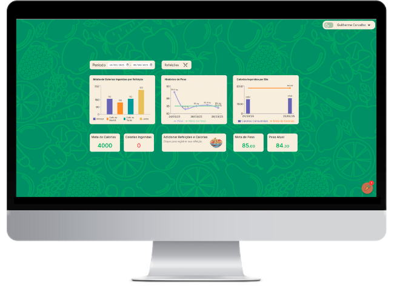
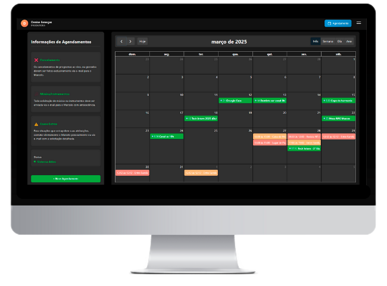
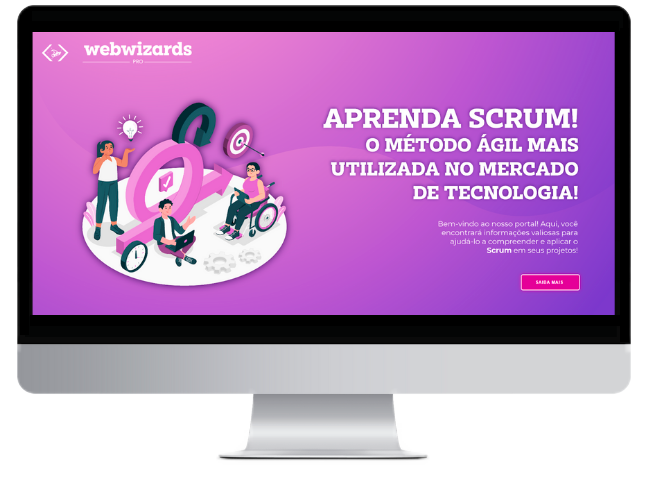
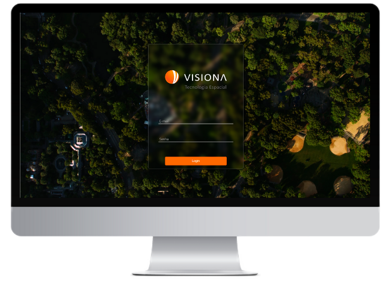
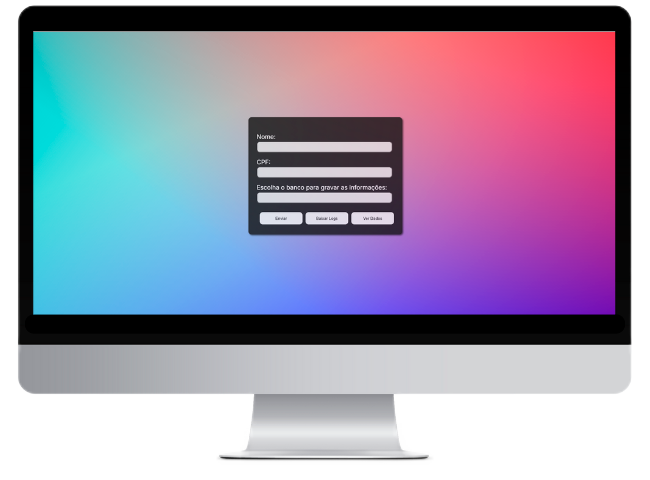
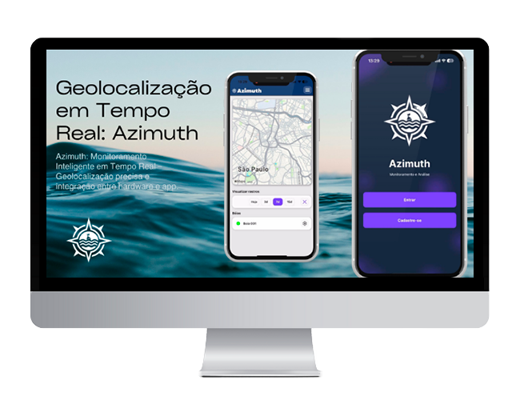
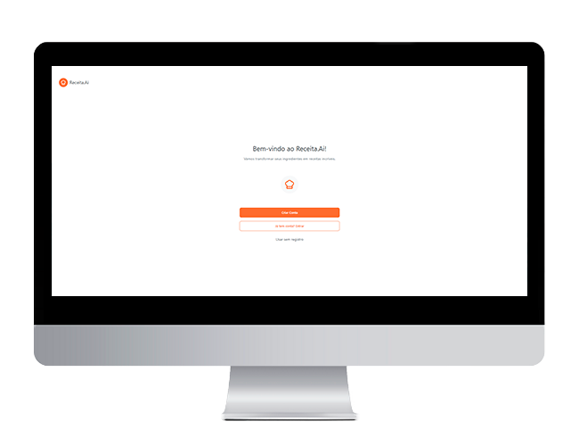
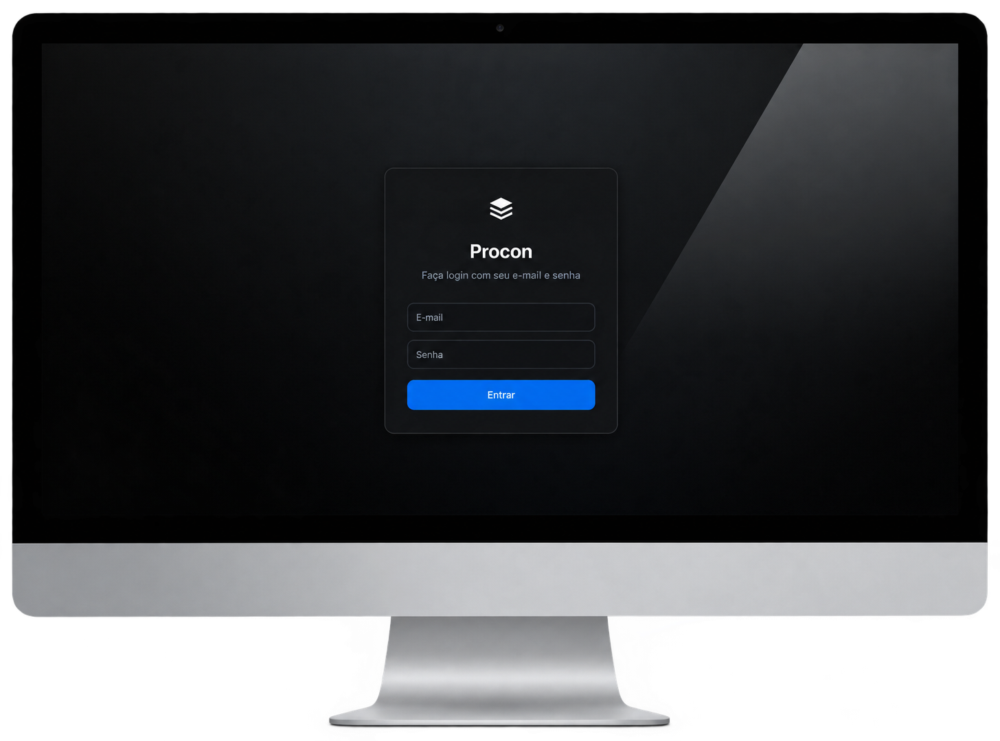

Projetos
Aqui você encontrará alguns dos projetos pessoais que desenvolvi, cada um com seu propósito, e alguns como estudo de caso.

LifePlus
Plataforma que auxilia no controle da alimentação e adoção de hábitos saudáveis. Com inteligência artificial, oferece recomendações personalizadas de dieta e treinos, além de responder dúvidas sobre nutrição e exercícios. Possui interface intuitiva, gráficos e painéis interativos para monitoramento do progresso. Desenvolvida com TypeScript, React e MongoDB.
Projeto
StudioSrv
StudioSrv é uma aplicação web em desenvolvimento para reserva de estúdios. Voltada a produtores, permite consultar a disponibilidade de horários e realizar agendamentos de forma prática, evitando conflitos. A plataforma garante uma gestão eficiente das reservas. Desenvolvida com React e TypeScript no frontend, Node.js com TypeScript no backend e MySQL como banco de dados.
Projeto
Site Scrum
Plataforma interativa para ensino de metodologias ágeis, com foco em Scrum. Oferece módulos didáticos, simuladores de cerimônias e quizzes para validação do aprendizado. Desenvolvida com HTML, CSS, Bootstrap, JavaScript e prototipagem no Figma.
Projeto
GcFlow
Plataforma para gestão comercial com controle de vendas, estoque e pagamentos. Oferece relatórios precisos, alertas inteligentes e gráficos interativos para acompanhamento financeiro. Desenvolvida com TypeScript, React e MySQL/Prisma.
Projeto
Visiona
Plataforma web desenvolvida para otimizar o processo de mapeamento de uso e ocupação da terra. Permite o cadastro de projetos, delimitação de áreas, atribuição de tarefas e carregamento de polígonos para edição. Conta com geração de estatísticas, filtros e exportação de relatórios em PDF. Criada com foco em produtividade e colaboração para empresas de geotecnologia, utilizando TypeScript, Node.js, React e MySQL.
Projeto
Multi-Banco de Dados com Arquitetura Distribuída
Sistema distribuído com suporte a múltiplos bancos de dados: PostgreSQL, MongoDB e MySQL. Permite a escolha dinâmica do banco para gravação e leitura de dados, com fallback automático para garantir disponibilidade. Desenvolvido com React e TypeScript no front-end, e Node.js no back-end, o projeto garante flexibilidade, escalabilidade e confiabilidade na gestão de dados.
Projeto
Azimuth - Monitoramento de Derivadores via Aplicativo Móvel
Aplicativo desenvolvido para monitoramento de localização de derivadores em tempo real, com interface intuitiva e foco em praticidade. Integração com placa Arduino para captura precisa de coordenadas geográficas e transmissão dos dados ao app. Utiliza banco de dados modelado para garantir integridade, consistência e organização dos dados. Desenvolvido com React Native no front-end e Node.js no back-end, com foco em eficiência e usabilidade.
Projeto
Receita.AI - Identificação de Alimentos e Geração de Receitas com IA
Aplicativo desenvolvido para identificar alimentos via foto e gerar receitas automaticamente, reduzindo o desperdício e facilitando o dia a dia na cozinha. O sistema utiliza técnicas de reconhecimento de imagem para identificar os ingredientes disponíveis na geladeira e sugere receitas inteligentes com base neles. Desenvolvido em React Vite no front-end com TypeScript, back-end em Node.js seguindo padrão MVC, MongoDB com Mongoose, autenticação JWT, integração com API de IA open-source e armazenamento local com AsyncStorage. Projeto desenvolvido em 3 Sprints seguindo metodologia ágil.
Projeto
Procon — Chatbot com IA e WhatsApp
Projeto desenvolvido para ajudar o atendimento humano do Procon e facilitar a vida da população, oferecendo respostas mais rápidas e assertivas. O agendamento é feito totalmente via WhatsApp, e um site administrativo permite ao Procon gerenciar todo o atendimento ao público de forma centralizada.
Projeto